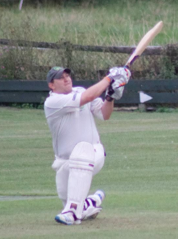
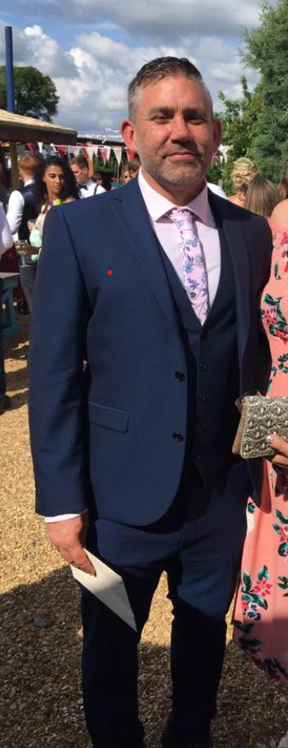
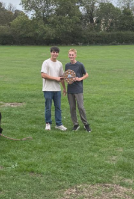
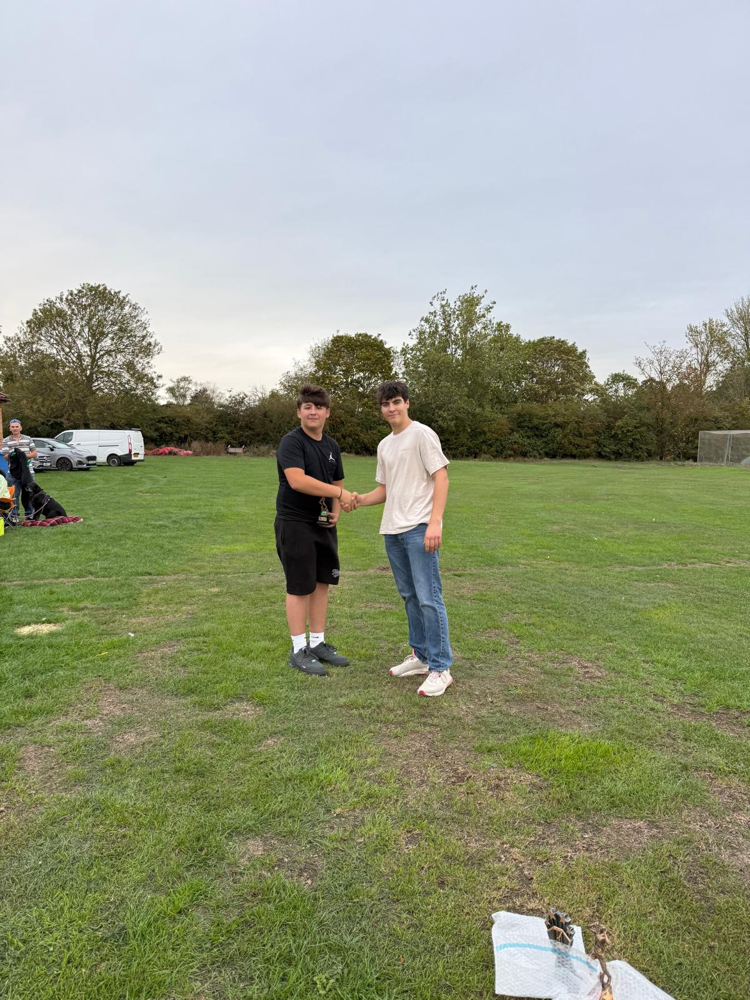
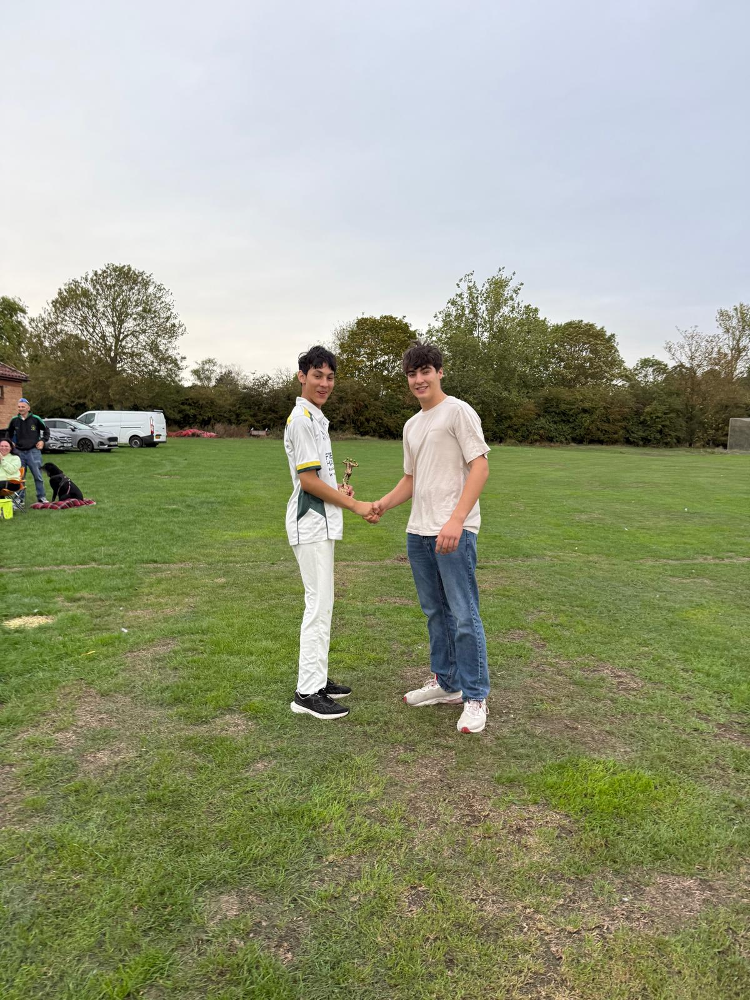
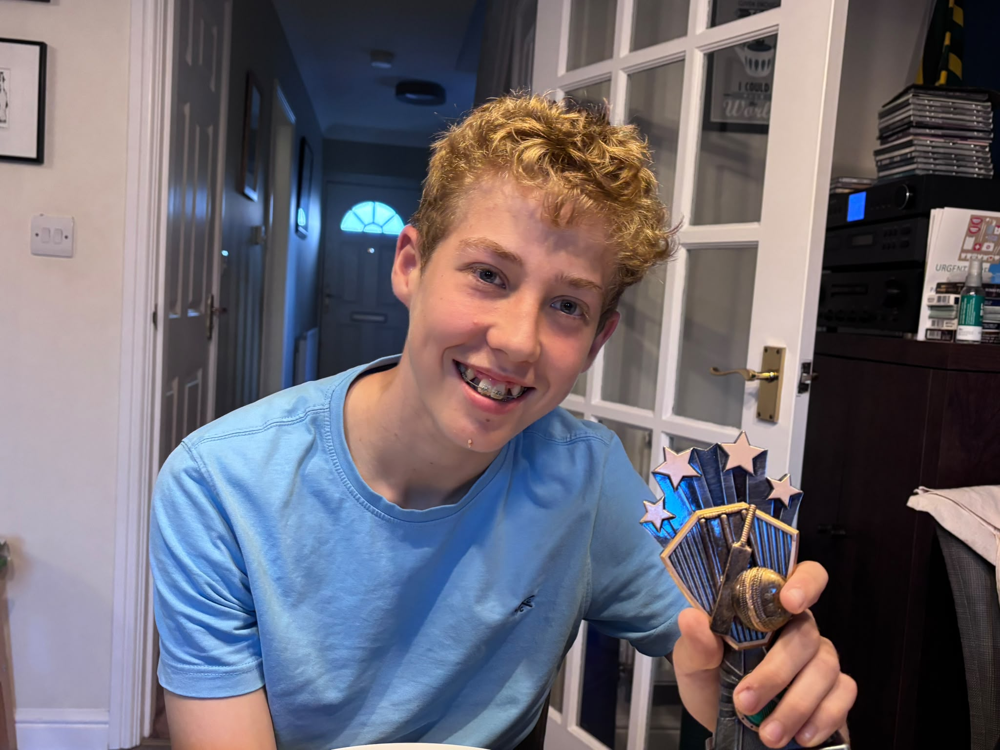
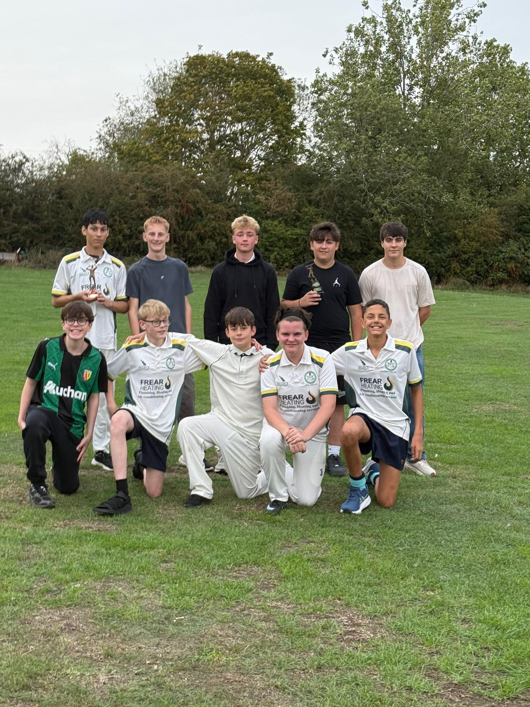

Batter of the Year · Player of the Year
Michael Grady
Two awards in 2026
Sutton Cricket Club archive
A year-by-year record of Sutton Cricket Club award winners currently preserved from 2016 to 2026, including senior teams, Sunday and Colts awards, Clubman, President’s Trophy, Fantasy Cricket and other club honours.
Presentation Evening · 2026
Celebrating Sutton Cricket Club's senior, women’s, Sunday, club and junior award winners.

Two awards in 2026

Photo to follow










Annual archive
Help complete the archive
If you have presentation-night records, old programmes, trophies or photographs covering earlier seasons, they can be added once confirmed.